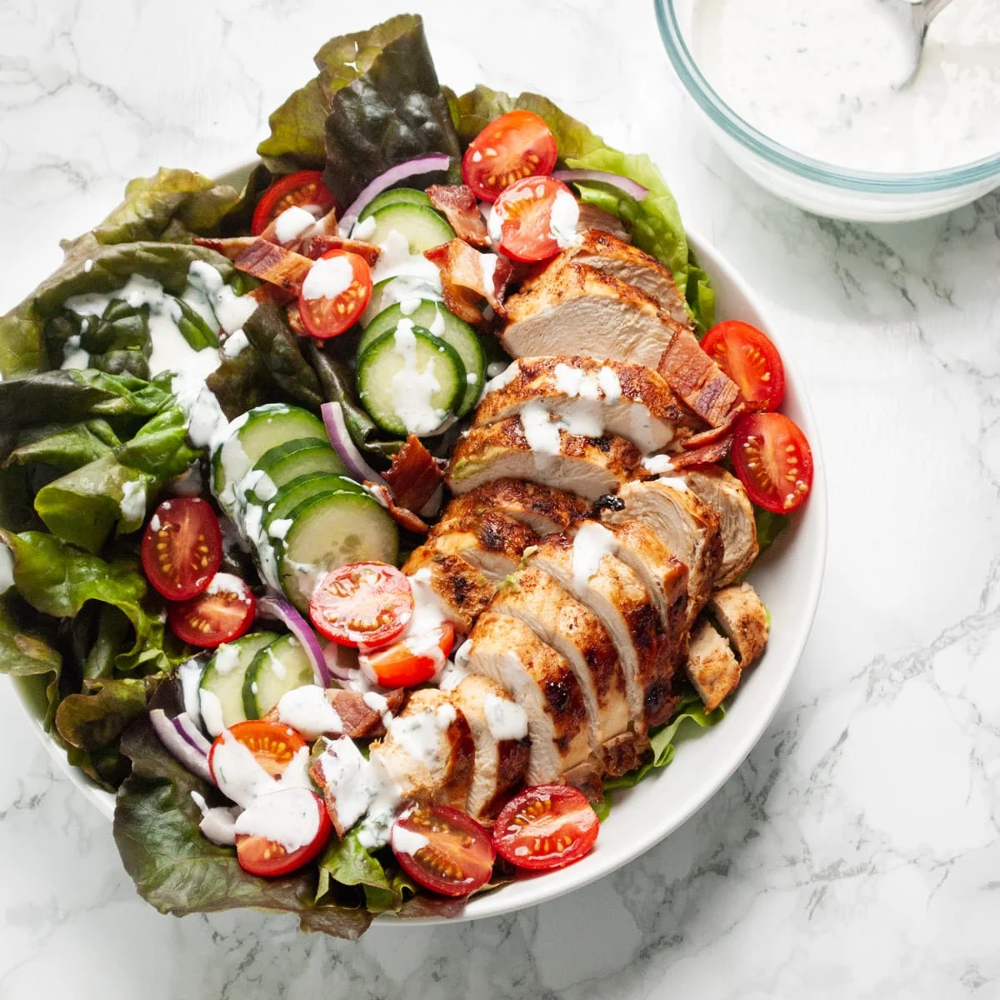

Chicken Bacon Ranch Salad

Chicken Bacon Ranch Salad
Great use of leftover chicken, and any leftover veggies can be added! Enjoy as a hearty lunch with some crackers, or for dinner with some crusty bread.
Ingredients
- 8 leaves romaine lettuce
- 2 cups chopped romaine lettuce
- 1/2 cup chopped cooked chicken
- 1/2 cup chopped avocado
- 1/2 cup cherry tomatoes, halved
- 2 tablespoons prepared ranch dressing
- salt and fresh ground pepper
- 2 slices cooked bacon, crumbled
Steps
- Line a salad plate with small romaine lettuce leaves
- Combine chopped romaine, avocado, and tomatoes in a large bowl. Add ranch dressing, salt, and pepper, and toss to combine
- Serve salad on a prepared plate and top with crumbled bacon